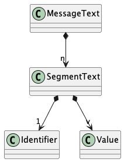

Parsing An Exchange-Format Message¶
An exchange-format X12 EDI message is a sequence of segments. Each segment has an identifier of 2 or 3 characters, and a sequence of element values. The elements are separated by an element separator, and the segments are separated by a segment separator.
We can depict it as follows:

For example, the following segment uses “|” as an element separator and “~” as a segment separator.
ST|271|0001~
This segment can be viewed as three string values, “ST”, “271”, and “0001”. The first string value is the segment identifier.
Alternatively, this segment can be viewed as an identifier and separator, “ST|”, followed by two string values, “271” and “0001”.
We generally choose the former view, which permits simple use of the string.split() method
to split the segment into fields.
The first field is the identifier, used for parsing the structure of a message and the loops.
The remaining values are assigned to elements and composites of the segment.
General Parsing¶
There’s a subtlety to the separators.
Important
The three separator characters can be found at the end of the ISA segment.
This could mean we have to read the ISA segment to figure out what separators define the structure of the ISA segment.
The are two relevant conventions that seem to break the circularity of parsing the ISA to find the punctuation required to parse the ISA segment.
The last three characters of the ISA segment will have the three punctuation marks. The final element is the component separator character, which has an element separator in front of it and the segment separator after it.
The ISA segment is generally uncompressed, and is 106 characters long. Characters 103, 104, and 105 just happen to have the three separators in a consistent, easy-to-find position.
If the ISA is compressed, then we don’t know where it ends and what the segment separator is. Then we have two fallback strategies:
Hope for line break whitespace, and consume the last 3 characters of a line that starts with
"ISA".Eyeball the data, figure out what the segment separator is, and provide this “manually.” The element separator is position 3. The component separaror is the 16th element. (Yucky, but, sometimes necessary.)
There seem to be three separators around the “Component Element Separator” field, ISA16, with common type I15 (which is nominally 1 position.) With an uncompressed ISA, the relevant values are here:
Position 103: Element separator in front of it.
Position 104: “Component” separator. This is one character of data. It appears to be used when an element is really an array of values.
Position 105: Segment separator. Is the end of every segment.
Message Parsing¶
Pragmatically, message parsing is made complicated by two features:
Loops are not present in the text representation. A Loop contains one or more Segments, defining an expected sequence of Segments.
Composites are not present in the text representation. A Composite contains a number of Elements; it’s a kind of sub-Segment.
This means we have the following relationships.

The essential algorithm works by consuming each segment based on the defined loops within a message. A source lexical scanner “peeks” at the heading of the next segment. The Loop parser then use the heading to decide if it should consume the next Segment or if it is finished consuming Segments.
Consuming a Segment means locating the Elements and Composites (sequences of Elements) within the segment, and assigning text values to those elements and composites. This is slightly different from consuming segments because there are fewer choices to be made.
Segment Parsing¶
Conceptually, the Segment parsing algorithm uses approach similar to the following:
identifier, *fields = segment_text.split(element_separator)
segment_class[identifier].build_attrs(fields)
However. It appears that some elements are not really
atomic.
See, specifically the 834 message.
Loops 2100A and 2100B have DMG Segments.
The DMG05 Element is a sequence of “components” (?).
The type is list[DMG05], something that appears unique to this message.
This means each field value containing the component separator character can be decomposed into a list of values.
fields = [
val.split(component_separator) if component_separator in val else val
for val in fields
]
An important consequence is the Component Separator must be provided separately, and can be unique for each message. This avoids having to escape the component separator when it occurs in a value.
It appears that the software encoding a message must pick a component separator character based on the values present in those (few) fields that can have sub-components in them.
The default seems to be “:”.
But, if there’s a “:” value in a field, the separator might be “^” or “\”.